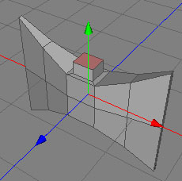

Axe
In this tutorial you will learn how to make a simple axe. It will also give you a first insight into polygon and subdivision modelling.
If you haven't already, work through the first tutorial so that you're familiar with objects and tags.
| 1. Create a box as the starting point First we create a simple box object. Set the width to 3.0, the length to 0.5, the Y sections to 2 and the X sections to 5. After calling the menu command "Objects |

|
| 2. Give the axe the basic shape Use the transform tool to bring the mesh into the following shape. |
|
| 3. Creating the handle To create the handle of the axe you need to select the polygon through which the handle should go and inner extrude it. To finish to upper part of the handle, extrude the already selected polygon a little bit. Now do the same procedure for the lower part of the handle. |

 |
|
4. Sharpen the axe |
 |
|
5. Assigning materials |

|
| 6. First try to smooth out the mesh If we now apply the "Tools |
|
| 7. Adding sharp features We first have to set the creases. Creases are sharp features in the context of subdivision surfaces. To set an edge as a crease, select the edge in edge mode, and then apply the command "Selection |

|
| 8. Second try to smooth out the mesh If you now apply the "Tools |
|
| 9. Finished You can find the axe in the Examples folder which comes with Cheetah3D. |
|